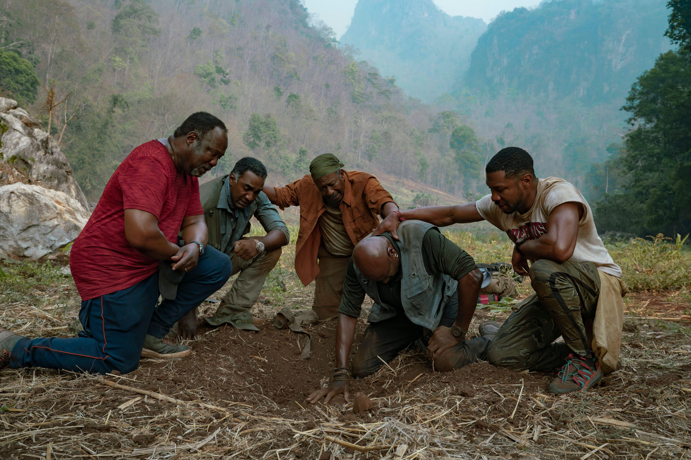
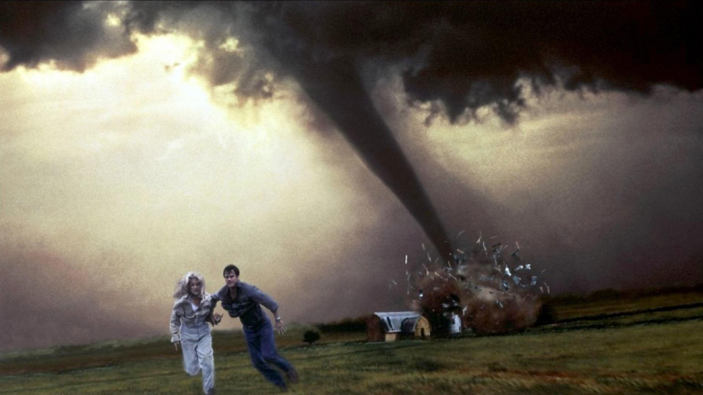

Что смотреть: 5(5) лучших фильмов на любой вкус
Подборка на случай, если вы в муках выбора решите в очередной раз пересмотреть «Офис», «Друзей» или «Теорию большого взрыва» (не надо, в мире много другого интересного).
Пандемия коронавируса оставила нас без десятков крупных премьер и удовольствия походов в кино, и мы усиленно взялись за Netflix и другие стриминг-сервисы. Единственная проблема в этой ситуации — муки выбора, ведь от бесконечного скроллинга фильмов действительно можно устать — и включить по привычке уже заученных «Друзей», «Теорию большого взрыва» или «Офис».
Мы решили облегчить эту задачу и выбрали 55 фильмов на любой вкус, которые скрасят ваш киновечер, — от маленьких неизвестных шедевров до номинантов на «Оскар», документальных и научно-фантастических фильмов, боевиков, романтических комедий и многого другого. Все эти фильмы можно найти в библиотеке Netflix.
Неограненные драгоценности / Uncut Gems
Адам Сэндлер когда-нибудь получит премию «Оскар», которую он заслуживает? «Неогранённые драгоценности», вероятно, приближают его к этому. Играя умного и изобретательного нью-йоркского ювелира, Сэндлер погружается в мир грязных азартных игр в надежде заработать большие деньги и спасти себя и свою семью от финансового краха. К моменту, когда он оказывается в гуще событий, он понимает, что игра, возможно, не стоит свеч.
Пятеро одной крови / Da 5 Bloods
В продолжение оскароносного «Черного клановца», Спайк Ли отправляет четырех ветеранов вьетнамской войны обратно в эту страну — и там начинается новое приключение. Они ищут тело своего бывшего лидера, погибшего во время миссии, и захороненный ими клад с золотом. Фильм с мощной игрой Делроя Линдо — потрясающий ответ всем фильмам о Вьетнаме, где о черных героях ни слова.
Молчание ягнят / Silence of the Lambs
О, Клариса. Ты в опасности, девочка. Джоди Фостер играет агента ФБР Кларису Старлинг, которая допрашивает безумного психиатра и людоеда Ганнибала Лектера и оказывается вовлеченной в его психологическую игру. Чем дольше Клариса продолжает допрос, тем больше она подвергает опасности свою собственную жизнь … возможно, больше, чем она предполагает.
Молчание ягнят / Silence of the Lambs
О, Клариса. Ты в опасности, девочка. Джоди Фостер играет агента ФБР Кларису Старлинг, которая допрашивает безумного психиатра и людоеда Ганнибала Лектера и оказывается вовлеченной в его психологическую игру. Чем дольше Клариса продолжает допрос, тем больше она подвергает опасности свою собственную жизнь … возможно, больше, чем она предполагает.
Молчание ягнят / Silence of the Lambs
О, Клариса. Ты в опасности, девочка. Джоди Фостер играет агента ФБР Кларису Старлинг, которая допрашивает безумного психиатра и людоеда Ганнибала Лектера и оказывается вовлеченной в его психологическую игру. Чем дольше Клариса продолжает допрос, тем больше она подвергает опасности свою собственную жизнь … возможно, больше, чем она предполагает.
Смерч / Twister
Это типичная американская трагедия, снятая в разгар 1990-х. Фильм о том, как двое ученых во время стихийного бедствия отправляются на смертельную миссию — запустить в торнадо специальный датчик, который позволит им лучше понять природу смерчей и лучше их отслеживать.
Джо имеет личные счёты с торнадо — стихия унесла жизнь её отца, когда она была ещё ребёнком (летней ночью 1969 года). Когда она выросла, то стала метеорологом и разрабатывает методику предсказания возникновения торнадо. Её брак с Биллом Хардингом, тоже учёным, дал трещину и они собираются разойтись. Осталось только подписать бумаги на развод. Однако им необходимо довести до конца программу исследований. Джо и Билл разработали устройство под названием Dorothy («Дороти») и задача в том, что его должно засосать внутрь урагана. Внутри воронки, устройство выпустит специальные датчики, которые передадут показания учёным.
Смерч / Twister
Это типичная американская трагедия, снятая в разгар 1990-х. Фильм о том, как двое ученых во время стихийного бедствия отправляются на смертельную миссию — запустить в торнадо специальный датчик, который позволит им лучше понять природу смерчей и лучше их отслеживать.
Джо имеет личные счёты с торнадо — стихия унесла жизнь её отца, когда она была ещё ребёнком (летней ночью 1969 года). Когда она выросла, то стала метеорологом и разрабатывает методику предсказания возникновения торнадо. Её брак с Биллом Хардингом, тоже учёным, дал трещину и они собираются разойтись. Осталось только подписать бумаги на развод. Однако им необходимо довести до конца программу исследований. Джо и Билл разработали устройство под названием Dorothy («Дороти») и задача в том, что его должно засосать внутрь урагана. Внутри воронки, устройство выпустит специальные датчики, которые передадут показания учёным.
Смерч / Twister
Это типичная американская трагедия, снятая в разгар 1990-х. Фильм о том, как двое ученых во время стихийного бедствия отправляются на смертельную миссию — запустить в торнадо специальный датчик, который позволит им лучше понять природу смерчей и лучше их отслеживать.
Джо имеет личные счёты с торнадо — стихия унесла жизнь её отца, когда она была ещё ребёнком (летней ночью 1969 года). Когда она выросла, то стала метеорологом и разрабатывает методику предсказания возникновения торнадо. Её брак с Биллом Хардингом, тоже учёным, дал трещину и они собираются разойтись. Осталось только подписать бумаги на развод. Однако им необходимо довести до конца программу исследований. Джо и Билл разработали устройство под названием Dorothy («Дороти») и задача в том, что его должно засосать внутрь урагана. Внутри воронки, устройство выпустит специальные датчики, которые передадут показания учёным.